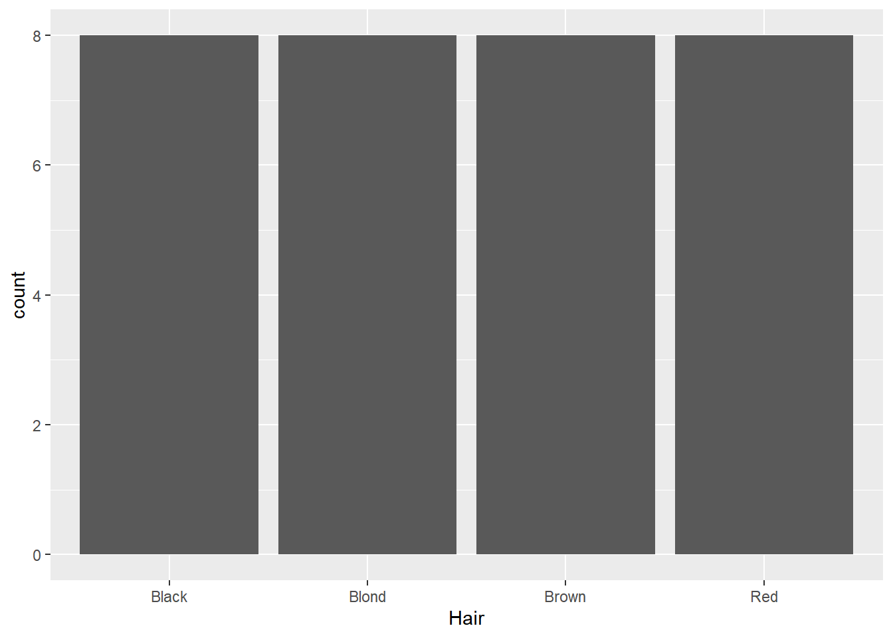
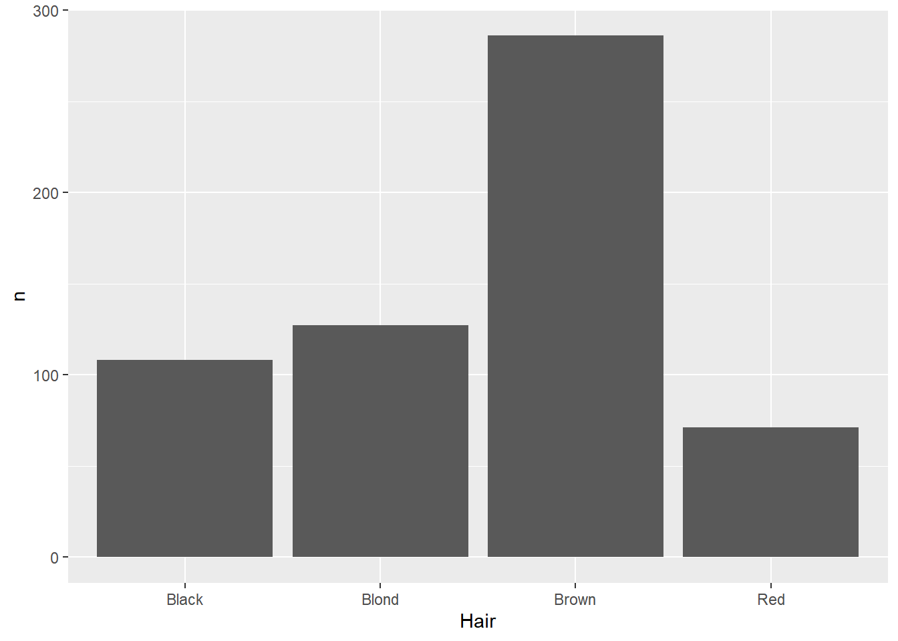
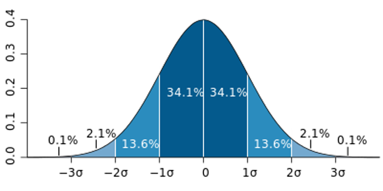
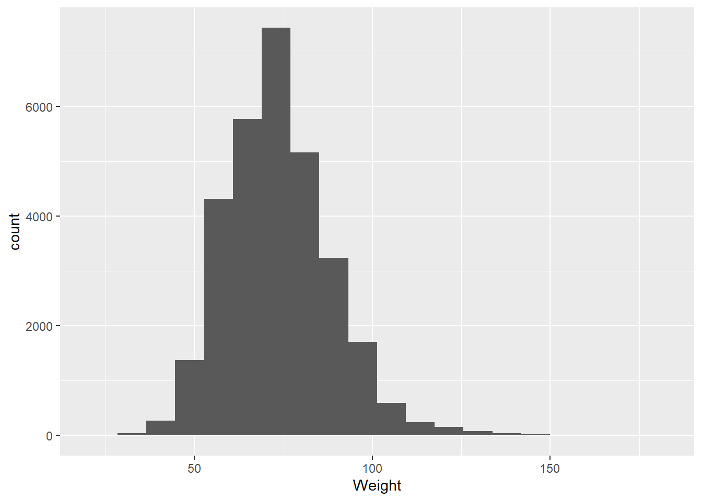
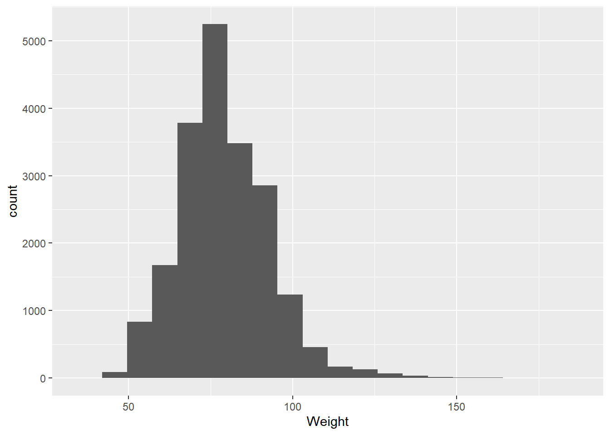
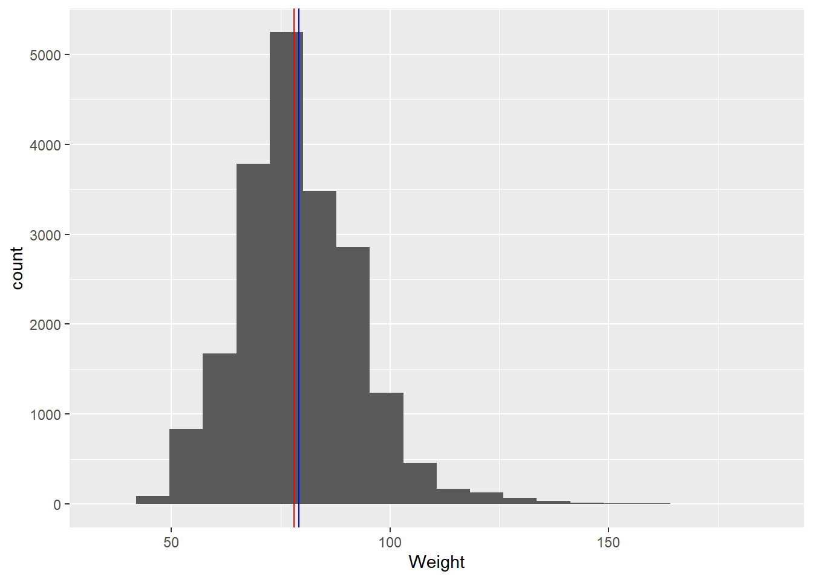

There’s not really a right or wrong way to do EDA, but many often start simply by exploring patterns in single variables. This is called univariate analysis. We do this by selecting variables one at a time and plotting them. However, the approach we take to visualization will depend on the kind of data we have.
Categorical
What we’re looking for here are relative proportions. Does some categories stand out from the others? We’ve seen the geom_bar geometry be used for this. But what if the counts are already in the data? For example, look at the HairEyeColor dataset from the modeldata package:
hairEye<-as_tibble(HairEyeColor)hairEye
# A tibble: 32 × 4
Hair Eye Sex n
<chr> <chr> <chr> <dbl>
1 Black Brown Male 32
2 Brown Brown Male 53
3 Red Brown Male 10
4 Blond Brown Male 3
5 Black Blue Male 11
6 Brown Blue Male 50
7 Red Blue Male 10
8 Blond Blue Male 30
9 Black Hazel Male 10
10 Brown Hazel Male 25
# ℹ 22 more rows
This is data on hair and eye color recorded in a statistics class. Here, we can see columns giving the categories of hair and eye color, as well as sex, while the counts for each combination are stored in the n variable (shorthand for number). Normally, the geom_bar function counts each instance for us, so if we use that here, it will just count each time a category is mentioned in that column:
ggplot(data=hairEye,aes(x=Hair)) +geom_bar()

This is technically a correct use of a bar plot, but since the number of people is actually stored as a separate variable, the number of instances of each category is the same, so the output is not especially helpful. There are a few different ways we can deal with this, but one way is to use the geom_col function:
ggplot(data=hairEye,aes(x=Hair,y=n)) +geom_col()

This function makes two aesthetic mappings: the variable of interest on the x-axis (in this case, Hair), and the sum of the number of instances as a column-stored variable (n) on the y-axis.
Numerical
Coming back to the question at the end of the last section: why histograms? By counting the number of instances in different bins across the range of values, the histogram ends up approximating a probability distribution:

The standard normal distribution
A probability distribution is a way of visualizing the probability that any individual measurement in a population will produce a given value. Let’s dive into this using the olympics data:
Warning: Removed 9327 rows containing non-finite outside the scale range
(`stat_bin()`).

There are several things we might look at when we’re visualizing data using a histogram:
Center
Where is the average, or most likely, value. Two common measures are mean (the sum of the values divided by their number) and median (the middle-most value):
mean(olympics$Weight,na.rm=TRUE)
[1] 73.77068
median(olympics$Height,na.rm=TRUE)
[1] 178
If we haven’t talked about it yet, the argument na.rm removes any NA values before running this function. This doesn’t actually delete them, but it just means that the function will skip over them. Some functions won’t work, or will produce unexpected results, if there are NA values present.
Spread
A common measure of spread is variance, which is the average of the squared differences for each value from the mean value.
var(olympics$Weight,na.rm=TRUE)
[1] 225.481
This tells us that The problem here is that while this gives us a sense of how the values are spread, it isn’t given in terms that are different units from the kilograms we were working in.
The metric most often used when we want to understand spread in the same units is the standard deviation, which is just the square root of the variance. As seen in the darkest shaded area in the diagram above labeled The normal distribution, this works out to be the central most 68.2% of all values in the distribution.
We can access this value using the sd function, most often done in tandem with the mean:
mean(olympics$Height,na.rm=TRUE)
[1] 177.5542
sd(olympics$Height,na.rm=TRUE)
[1] 10.89372
What this information tells us is that 68.2% of all the heights in our dataset fall between 166.6605 (mean - standard deviation) and 188.4479 (mean + standard deviation). When we write this out, it’s usually written as:
\[
177.5542 \pm 10.89372
\]
Another way to look at spread is the interquartile range, or IQR for short. This is the range covered by the half of the data closest to the median; in other words, the middle 50%. You’ve seen this visualized in a boxplot: the IQR is the distance between the uppermost and lowermost edges of the box part of the plot.
The IQR function gives this distance:
IQR(olympics$Height,na.rm=TRUE)
[1] 15
This tells us that there is a difference of 15 centimeters among the middle 50% of olympic medalists in this table. However, if you wanted to get values at 0, 25, 50, 75, and 100%, you can use the quantile function:
quantile(olympics$Height,na.rm=TRUE)
0% 25% 50% 75% 100%
136 170 178 185 223
Looking at this, we can see that the median value (50%) is 178 cm, while the interquartile range is between 170 and 185 cm, or 15 cm total.
Try it yourself!
The object returned by the quantile function looks different from things we’ve seen before: this is a named vector. It’s exactly what it sounds like: a vector where each object has an associated name. Try the following:
Get the quantiles of Olympic medalist ages and assign them to an object called ageQuant
Try and access the 75% quantile value by itself (hint: brackets may be involved).
See if you can write a piece of code that uses the names function in a way that returns just the label “75%” and stores it as an object called seventyfive
What’s the point of having these different descriptors, especially when we can just visualize them? There’s a few reasons
A numerical summary is more concise than a visualization, which can be useful for expressing information about a dist
Numerical summaries themselves can become data. For example, you might get the mean of an air quality measure for households in a neighborhood. If you then did this for multiple neighborhoods, they become data about neighborhoods that can be analyzed. However, it’s important to recognize that when you start looking at data at another level of aggregation (e.g., households to neighborhoods), inferences you make at one level won’t necessarily inform on the other1.
Skew
Skew indicates whether the data are evenly spread around the center or have values that are notably larger (positive skew) or smaller (negative skew). For example, if we look at heights among male Olympians:
Warning: Removed 8426 rows containing non-finite outside the scale range
(`stat_bin()`).

We see slightly positive skew in these values, indicated by the x-axis carrying on to the right. This skew can be further illustrated by plotting the mean and median on this plot. In a normal distribution, these two measures will be the same; however, the more skewed a distribution is, the greater the separation between them.
Warning: Removed 8426 rows containing non-finite outside the scale range
(`stat_bin()`).

As we can see, there are a number of techniques we can apply to looking at a single variable. In the next section, we’ll look at ways we can consider relationships between variables.
This is known as the ecological fallacy. Think of it this way: if I know that the average household income in Neighborhood A is lower than Neighborhood B, I cannot then use that information to say that the income of a household in Neighborhood A is less than that of one in Neighborhood B. In fact, the reverse could easily be true.↩︎